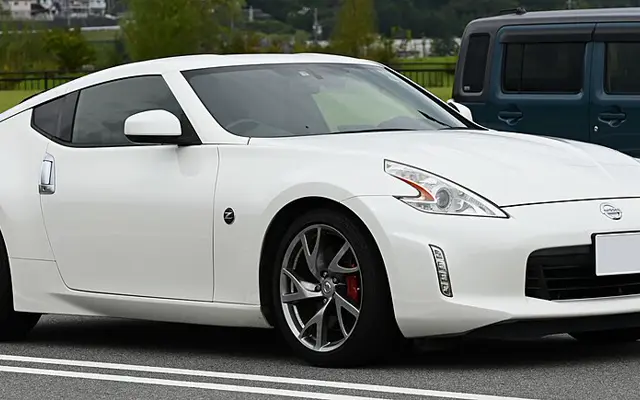

Par Motor › Precios por modelo › Nissan 370Z y Z
Precio de segunda mano · noviembre de 2026¿Cuánto vale un Nissan 370Z y Z de segunda mano?

Precio justo estimado de un Nissan 370Z y Z usado en España, año por año, con los kilómetros normales para su edad y en buen estado: de 11.800 € a 67.900 €. Para tasar el tuyo con sus kilómetros reales y su estado, usa el tasador gratis.
Precios del Nissan 370Z y Z por año
350Z (2003–2009)
Precio de nuevo: 3.5 V6 280 CV, 38.000 € · 3.5 V6 313 CV, 40.000 €
| Año | Km normales | 3.5 V6 280 CV · Gasolina | 3.5 V6 313 CV · Gasolina |
|---|---|---|---|
| 2009 | 100.000 km | 16.500 € | 17.400 € |
| 2008 | 100.000 km | 15.600 € | 16.400 € |
| 2007 | 100.000 km | 14.800 € | 15.500 € |
| 2006 | 100.000 km | 14.000 € | 14.700 € |
| 2005 | 100.000 km | 13.200 € | 13.900 € |
| 2004 | 100.000 km | 12.500 € | 13.200 € |
| 2003 | 100.000 km | 11.800 € | 12.400 € |
370Z (2009–2020)
Precio de nuevo: 3.7 V6 328 CV, 42.000 € · Nismo 3.7 V6 344 CV, 48.000 €
| Año | Km normales | 3.7 V6 328 CV · Gasolina | Nismo 3.7 V6 344 CV · Gasolina |
|---|---|---|---|
| 2020 | 95.000 km | 26.300 € | 30.100 € |
| 2019 | 100.000 km | 25.200 € | 28.800 € |
| 2018 | 100.000 km | 25.000 € | 28.500 € |
| 2017 | 100.000 km | 24.700 € | 28.300 € |
| 2016 | 100.000 km | 24.500 € | 28.000 € |
| 2015 | 100.000 km | 24.100 € | 27.600 € |
| 2014 | 100.000 km | 23.800 € | 27.200 € |
| 2013 | 100.000 km | 22.700 € | 26.000 € |
| 2012 | 100.000 km | 21.500 € | 24.600 € |
| 2011 | 100.000 km | 20.400 € | 23.300 € |
| 2010 | 100.000 km | 19.300 € | 22.000 € |
| 2009 | 100.000 km | 18.200 € | 20.800 € |
Z (2023–hoy)
Precio de nuevo: 3.0 V6 Twin Turbo 405 CV, 65.000 €
| Año | Km normales | 3.0 V6 Twin Turbo 405 CV · Gasolina |
|---|---|---|
| 2026 | 5.000 km | 67.900 € |
| 2025 | 20.000 km | 59.700 € |
| 2024 | 35.000 km | 56.500 € |
| 2023 | 50.000 km | 53.400 € |
Kilómetros normales: 15.000 al año en gasolina, híbridos y eléctricos, y 20.000 en diésel, con un máximo de 100.000 km (por encima no tasamos: el precio depende demasiado del historial de cada coche). Cifras redondeadas a 100 €.
Preguntas frecuentes
¿Cuánto vale un Nissan 370Z y Z de segunda mano?
Según el año, la versión y los kilómetros, un Nissan 370Z y Z usado vale hoy de 11.800 € a 67.900 € en España. El más barato de nuestra tabla es un 3.5 V6 de 2003 (11.800 €) y el más caro un 3.0 V6 Twin Turbo de 2026 (67.900 €). Son precios justos estimados entre particulares y profesionales, con los kilómetros normales para su edad y en buen estado.
¿Qué motorizaciones tiene el Nissan 370Z y Z?
En nuestra base de datos hay versiones gasolina, en 3 generaciones: 350Z, 370Z y Z.
¿Cómo sé si me piden demasiado por un Nissan 370Z y Z?
Abre el tasador de Par Motor, elige el Nissan 370Z y Z, el año y los kilómetros reales, y escribe lo que te piden. Te diremos si está por debajo del precio justo (chollo) o por encima (caro). Es gratis y no pide registro ni matrícula.
Otros Nissan
Compara su coste real
El precio de compra es solo una parte. Mira cuánto te costaría al mes con combustible, seguro, neumáticos, mantenimiento y lo que pierde de valor.
Abrir el comparador →